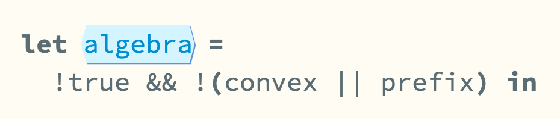
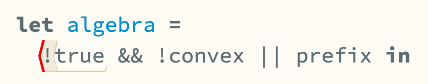
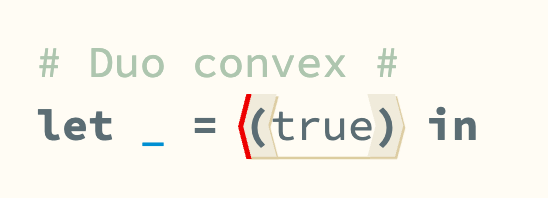
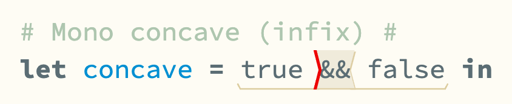
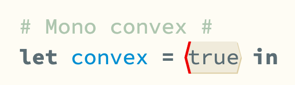
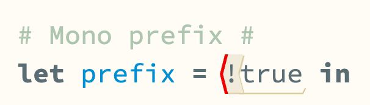

I am a very mouse-driven developer. I will opt to use mouse over keyboard even in situations where it is frankly stupid to do so. I am generally unapologetic in this. I daily drive VSCode which has pretty terrible click-to-select-code support. When I wrote Clojure professionally I used Emacs, which I was more or less glad to drop, but I miss being able to double click on paretheses to select their contents. AFAICT this is neither possible in VSCode vanilla nor by extention.
Like a lot of things I've ended up implementing in Hazel, click-to-select was not on my critical path, either acdemically or with respect to skill development, but simply because it beckoned. And, as a more-or-less structured editor, Hazel (surely) has a very clear internal model of semantically meaningful segments of code, so implementing a nice, syntax-guided selection mode should be straightforward.
And it was, to a first approximation. (Link to PR) But soon that first approximation became palapably approximative, so I've revisted the functionality as part of my upcoming Hazel Summer Refresh (link to PR).
The reasons it didn't work perfectly before are partly about the implementation, and partly more conceptual. When it comes down to it, the issue is: What does it mean to be a meaningful sub-part of code? In particular, meaningful to the user with respect to ergonomic code transformation, which is closely related but distinct from the meaning of the code to the backend; the formal semantics.
After spending the last few years developping a language and editor in a small but now rapidly growing team setting, I now have some amount of clarity on what a 'term' is to different people. In particular, the notion of 'a term' becomes clearer and more obvious the more you learn about programming lanugage theory in the abstract sense, and less clear and less obvious the more you learn about parsing and language in general. In (natural) linguistics, there no general agreement on what a 'word' is.
In progamming language 'linguistics', you need to contend with the often-blurry division between lexing and parsing, the distortions of languages into lopsided grammars required to satisfy the formal requirements of some parsing framework, and in structured editing, the fact that what seems cleanly a term from an implementation perspective may not line up with user expectations. Fundamentally, modern progamming language syntax, and the traditional algebraic notation it derives from, are both intricate and incidental, with many special cases cooperating in non-obvious ways.
The Tylr engine underlying Hazel defines a paradigm called tile-based editing. (link to paper) In this framework, every syntactic form is a tile, which is not necessarily a complete term, although it does (in combination with its precdence), effectively define one.
     